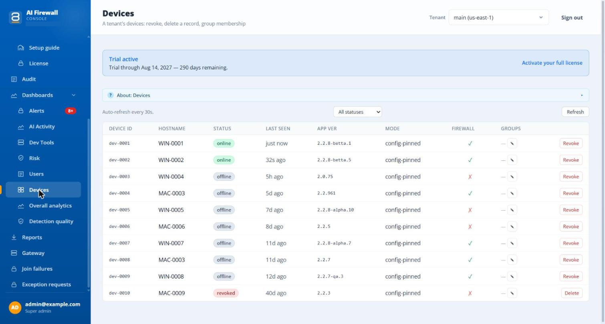

Check that computers joined¶
In the admin portal¶
Open the admin portal at https://<your-server>/admin and go to Dashboards > Devices. A computer that has joined appears within a few seconds. Check:
- that it is online;
- that it has received the policy (the policy version is shown).
If you deployed to a pilot group, compare the number of computers in the list with the number you targeted.

The picture shows a test workspace. Host names and IDs are examples.
On the computer¶
Windows
| Check | Where |
|---|---|
| The enrolment file exists | %PROGRAMDATA%\ai-firewall\enrollment.json |
| The outcome of the installation | %PROGRAMDATA%\ai-firewall\install-enrolment.log says whether enrolment worked, or why it was skipped. It never contains the key. |
| The app is connected | Open the app, then Device & coverage. The fleet line shows your server. |
macOS
| Check | Where |
|---|---|
| The file that you wrote | /Library/Application Support/ai-firewall/enrollment.json |
| The app is connected | Open the app, then Device & coverage. The fleet line shows your server. |
Also check Certificate trust. It must say Yes — installed. See the User Guide.
If a computer does not appear¶
| What you see | Likely cause | What to do |
|---|---|---|
| The computer works, but is not in the portal | The key or the address is missing or wrong. On Windows, one of the two switches was missing: both are needed | Check install-enrolment.log. Reinstall with both values. |
| The log says enrolment was skipped | The address was cut off, usually because it was not in quotes | Give the full https:// address in quotes. An address that does not start with https:// is written to the file, but the app does not use it. |
| The portal does not show it, and the app says it cannot reach the server | A firewall or proxy blocks the server address | Allow the address of your server from the computers. |
| It joined once, and is now shown as offline | The computer is off, or cannot reach the server | Wait. Check the network. |
| It was removed from the portal | An administrator revoked it | Reinstall. |
| Computers installed before you replaced the key do not join | They were installed with the old key | Reinstall them with the new key. |
An installation that is wrong in one computer does not stop protection on that computer. See the User Guide for the status messages the user sees.
For security teams¶
The agent asks for no inbound connections. It needs outbound access to your server address, plus the update address and huggingface.co for its detection models. The full list is under Network access. It listens only on the computer itself (127.0.0.1).